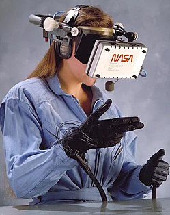

Virtual Reality
Virtual reality (VR) is a simulated experience that employs pose tracking and 3D near-eye displays to give the user an immersive feel of a virtual world. Applications of virtual reality include entertainment (particularly video games), education (such as medical or military training) and business (such as virtual meetings). Other distinct types of VR-style technology include augmented reality and mixed reality, sometimes referred to as extended reality or XR, although definitions are currently changing due to the nascence of the industry.
Currently, standard virtual reality systems use either virtual reality headsets or multi-projected environments to generate some realistic images, sounds and other sensations that simulate a user's physical presence in a virtual environment. A person using virtual reality equipment is able to look around the artificial world, move around in it, and interact with virtual features or items. The effect is commonly created by VR headsets consisting of a head-mounted display with a small screen in front of the eyes, but can also be created through specially designed rooms with multiple large screens. Virtual reality typically incorporates auditory and video feedback, but may also allow other types of sensory and force feedback through haptic technology.
Etymology
"Virtual" has had the meaning of "being something in essence or effect, though not actually or in fact" since the mid-1400s. The term "virtual" has been used in the computer sense of "not physically existing but made to appear by software" since 1959.
In 1938, French avant-garde playwright Antonin Artaud described the illusory nature of characters and objects in the theatre as "la réalité virtuelle" in a collection of essays, Le Théâtre et son double. The English translation of this book, published in 1958 as The Theater and its Double, is the earliest published use of the term "virtual reality". The term "artificial reality", coined by Myron Krueger, has been in use since the 1970s. The term "virtual reality" was first used in a science fiction context in The Judas Mandala, a 1982 novel by Damien Broderick.
Widespread adoption of the term "virtual reality" in the popular media is attributed to Jaron Lanier, who in the late 1980s designed some of the first business-grade virtual reality hardware under his firm VPL Research, and the 1992 film Lawnmower Man, which features use of virtual reality systems.